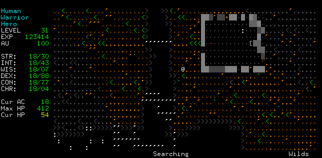

Adventuring amidst the destruction wrought by Saruman's orcs. The green and dark grey '<'s are trees (Dark grey are burnt trees), the orange single quotes are trees that are still burning. The white single quotes are bridges above a chasm.
Back